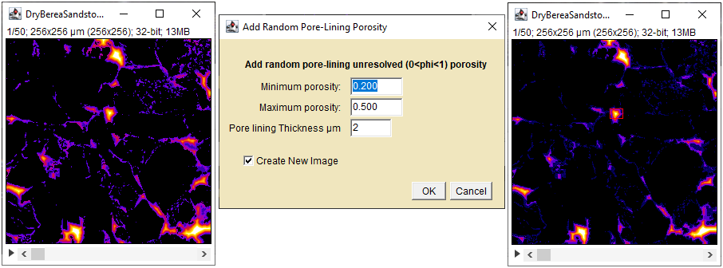
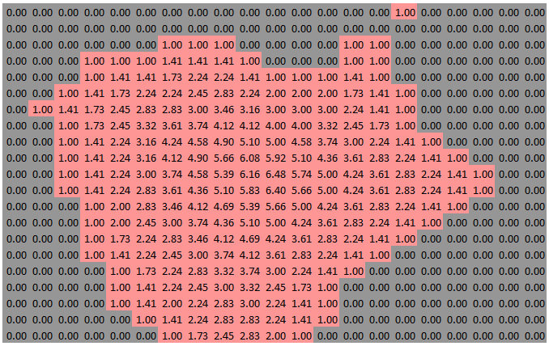
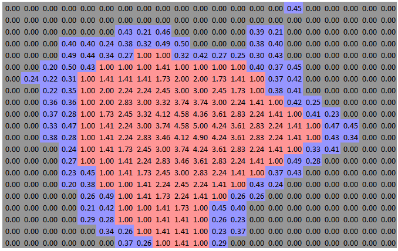

This plugin lines all pores with a layer of unresolved porosity.
Add Pore Lining requires a 32-Bit 3D Hybrid Porosity image:
What's a Hybrid Porosity Image?
A Hybrid image is a porosity image where the values of voxels in the resolved pore space(values=1) have been replaced by their distance to the nearest matrix-containing(0<value<1) voxel using a Euclidean distance mapping (Danielsson's) algorithm. The unresolved and solid voxel values are not altered.
What's a Porosity Image?
A porosity image1 is an image of the pore space in a porous medium obtained using a 3D imaging modality. The voxel values in a porosity image are the volume fraction of non-matrix material. Voxels of solid matrix are zero, voxels of resolved pore are 1, and voxels containing unresolved pore and matrix have values between 0 and 1. A specimen's matrix material can be removed experimentally by dissolution for example, or digitally by subtracting images before and after introduction of a contrast agent to the accessible pore space.

Initial Hybrid Porosity(left), Add Pore Liner dialog(center), Lined Hybrid Porosity with a small Roi(right).
Minimum porosity - The lower bound on the porosity values to be added to the lining 0<min<max
Maximum porosity - The upper bound on the porosity values to be added to the lining min<max<1
Pore Lining Thickness - The thickness of the lining layer in image units
Voxels within the specified distance to the pore surface are set to random porosity values between min and max.
Detail of the small red ROI in the Lined image

Roi Before Pore Lining All pore voxels are resolved (value> 1)

Roi After Pore Lining Pore voxels within 2um of the solid(0) are replaced with unresolved porosity (blue 0.2<porosity< 0.5)
The resolved pore distances have been recalculated (red).
1. Preparing experimental porosity images is a tricky business. Specimen size, length scale selection, imaging system definition(image size and resolution) and signal-to-noise, and voxel classification require considerable care. Calibration against know porosity materials is often essential.